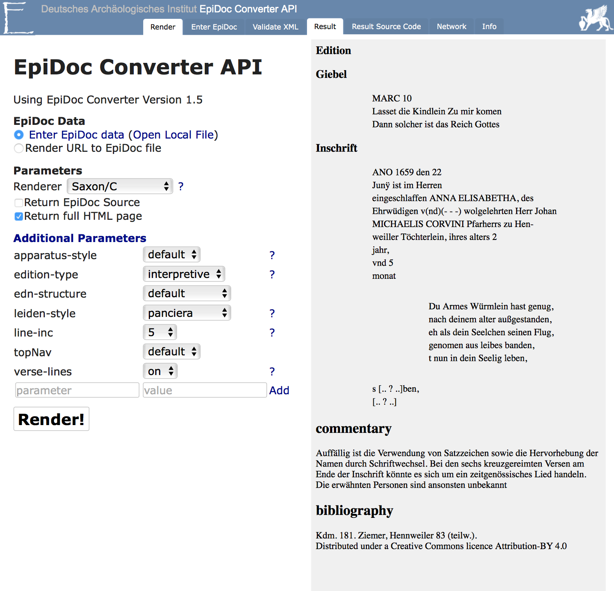

30. Januar 2018 | Hochschule Mainz
EpiDoc: TEI XML (2)
Ein Auszeichnungsstandard für epigraphische Daten und historische Quellen
Praxis und Vertiefung
Slides: https://digicademy.github.io/2018-EpiDoc-WS-2
Max Grüntgens | Dominik
Kasper | Thomas
Kollatz
 @digicademy |
@digicademy |  digicademy | CC-BY 4.0
digicademy | CC-BY 4.0
Gliederung
- Praxisteil
- Transformation
- Literatur
01
Praxisteil
Learning by Doing
Übertragen Sie mit Hilfe der EpiDoc Template Datei unter Zuhilfenahme der EpiDoc Guidelines das Fallbeispiel in ein valides EpiDoc: TEI XML Dokument !
Materialien
- EpiDoc-Template
ex-epidoctemplate.xmlherunterladen Optionen:- EpiDoc Guidelines EpiDoc Guidelines
- Direktlink ex-epidoctemplate.xml.
- XML-Datei
- EpiDoc Cheatsheet zur Struktur herunterladen
- Materialien zur Musterinschrift herunterladen:
{kind=link}
Musterinschrift
Quelle: DIO 34, 561
Musterlösung
Einen Lösungsvorschlag zur EpiDoc TEI konformen Auszeichnung der Musterinschrift finden Sie in der Datei DIO_34_561_20180122.xml.
02
Transformation
Transformationen
Von EpiDoc TEI XML nach HTML

EpiDoc Converter API (Deutsches Archäologisches Institut)
03
Literatur
Literatur
EpiDoc
- EpiDoc homepage on SourceForge
- Markup List: email list for discussions, questions, and help with EpiDoc issues
- EpiDoc Guidelines
- EpiDoc Stylesheets
Digitale Epigraphik
- Julia Flanders; Charlotte Roueché: Erste Einführung in die Textauszeichnung für Epigraphiker
- H. Cayless; C.M. Roueché; Tom Elliott; Gabriel Bodard (2009): "Epigraphy in 2017." Digital Humanities Quarterly 3.1. http://digitalhumanities.org/dhq/vol/3/1/000030/000030.html
TEI
Download
- https://digicademy.github.io/2017-EpiDoc-WS
- Alle Inhalte, Illustrationen und Bilder sind frei zur Weiterverwendung und Modifikation.
Lizenz: CC-BY 4.0, Max Grüntgens, Dominik Kasper, Thomas Kollatz